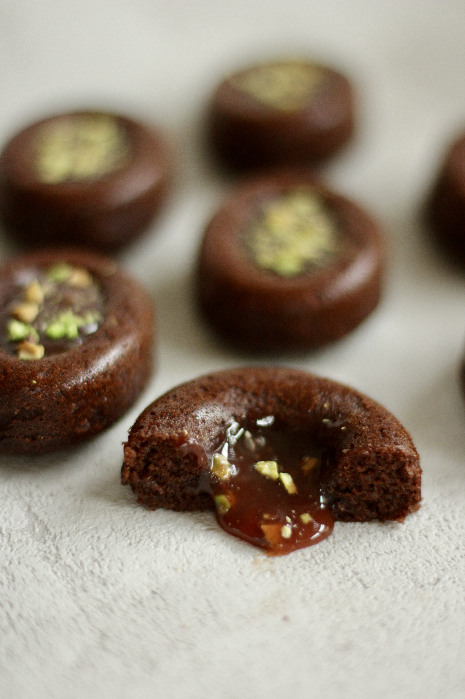

Galerie


Entdecke die leckersten Karamell-Süßigkeiten der Welt!
Im Alter von 15 Jahren habe ich für mich das Backen entdeckt. Bei mir beruht es aber nicht auf einer Familientradition wie es oft üblich ist. Weder meine Mutter noch meine Omas haben mit mir gebacken oder mir es irgendwie vorgelebt. In der Schule gab es eine Phase, in der die Mädchen gerne Rezepte gesammelt haben. Nach einer Weile war ich stolze Besitzerin eines Rezeptheftes. Damals hatte ich weder spezielle Backformen noch besondere Zutaten gehabt, aber dafür umso mehr Leidenschaft neue Sachen auszuprobieren. So hat meine Reise in die süße Welt begonnen. Als ich mit 18 Jahren nach Deutschland kam, war die Zeit in der Küche eine Art Rettungsanker für mich, welcher mir geholfen hat, in der neuen unbekannten Welt nicht unterzugehen. Nur beim Backen konnte ich mich komplett abschalten und die Zeit für einen Moment stehen lassen. Bis heute ist die Küche meine beste Ruhe-Oase, und das Backen - die bewährteste Stresstherapie. Während der beiden Elternzeiten habe ich die Welt der Patisserie für mich entdeckt. Beim Bewundern der Meisterwerke der talentierten Chefs wusste ich sofort: „Ich will es auch so können“. Ich habe aber schnell gemerkt, dass ich dafür nicht nur gute Rezepte brauche, sondern auch verstehen muss, wie der Hase läuft. Deshalb investiere ich bis heute sehr viel Geld und Zeit in verschiedene Workshops, Kurse und Seminare, um mein Patisserie Fundament zu festigen. Genau dieses Wissen hilft mir eigene Rezepte zu entwickeln, schlechte Rezepte zu verbessern und meine Studenten professionell zu begleiten. Meine Kurse und Rezepte finden Sie im Shop. Viel Spaß beim Nachmachen. Eure Julia
Hier kannst du Kurse, einzelne Rezepte als Datei, Rezepte mit Video und Rezeptkarten kaufen.
Email: nowo_sweets@t-online.de
Folge mir auf Instagram und anderen sozialen Medien!
Hier kannst du spezielle Anfragen stellen. Fülle das Formular aus und ich melde mich bei dir.